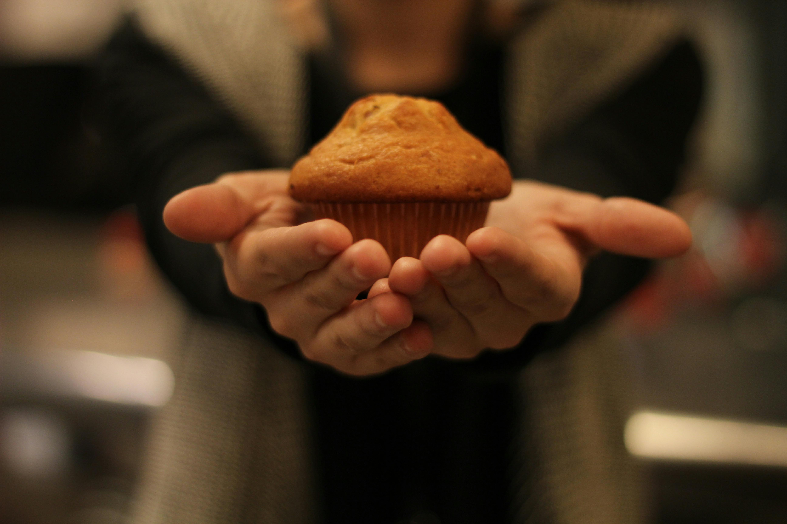

Home
Pumpkin Cream Cheese Muffin

Description
When is the last time you had a pumpkin cream cheese muffin? Probably during fall time right? To dig deeper, where did you have this muffin?
Was it in the car, on the way home or to work, after stopping by Starbucks the day they launched their fall menu? I thought so. So, instead
of having this muffin in one hand, with the other hand on the wheel, swirving on the road as crumbs of muffin fall onto your lap, how about you enjoy
it in the comfort of your own home. Even better, for a quarter of the price, and a fridge of a baker's dozen. This recipe is going to teach you the way of the beloved
Starbucks pumpkin muffin. It's an art, a martial art form if you will, but an easy one, and one that makes fall time that much better.
Ingredients
- Granulated Sugar
- All Purpose Flour
- Pumpkin Puree
- Pumpkin Pie Spice
- Brown Sugar
- Baking Soda
- Large Eggs
- Baking Powder
- Kosher Salt
- Cream Cheese
- Sour Cream
- Vanilla Extract
- Unsalted Butter
Steps (Where the Magic Happens)
- Preheat oven to 425°F and line a 12-cup muffin pan with paper liners.
- Melt 8 tbsp of unsalted butter over low heat until a smal piece of butter remains in. Let cool to just warm.
- In a medium bowl whisk together:
- 1 & 3/4 cups all-purpose flour
- 2 tsp baking poweder
- 1/2 tsp baking soda
- 3/4 tsp kosher salt
- In a large bowl whisk together:
- 1/2 cup brown sugar
- 1/2 cup granulated sugar
- 1 tbsp pumpkin pie spice
- The warm melted butter
- 2 room temperature large eggs
- 1 & 1/4 cup umpkin puree
- 1/4 cup sour cream
- Let rest for 10 minutes
- In a separate bowl, mix together:
- 6 oz of room temperature cream cheese
- 2 tbsp granulated sugar
- 1 large egg yolk
- Stir until combined, then mix in 1/2 tsp vanilla extract
- Transfer this (cream cheese) mixture into a piping bag
- Mix together the first two bowls, in two separate batches. Mix until some lumps, don't overmix.
- Divide batter into paper liners. Then pipe 6 small drops of cream cheese onto each muffin, swirling it on top with a toothpick.
- Bake at 425°F for 5 minutes. Then turn heat down to 350°F for 15-18 minutes (Internal temperature = 202°F).
- Let the muffins cool for 5 minutes in pan, then transfer to wire rack to cool.
Enjoy!